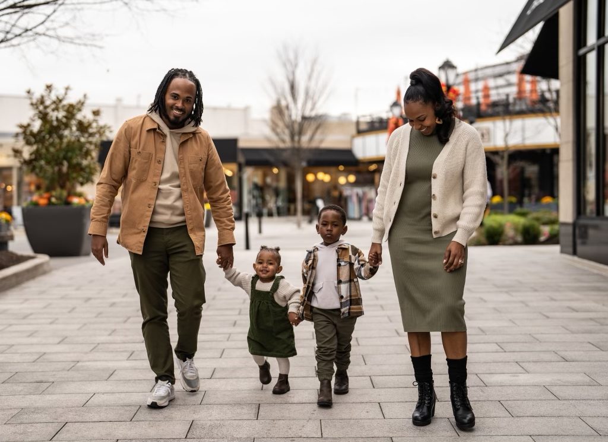
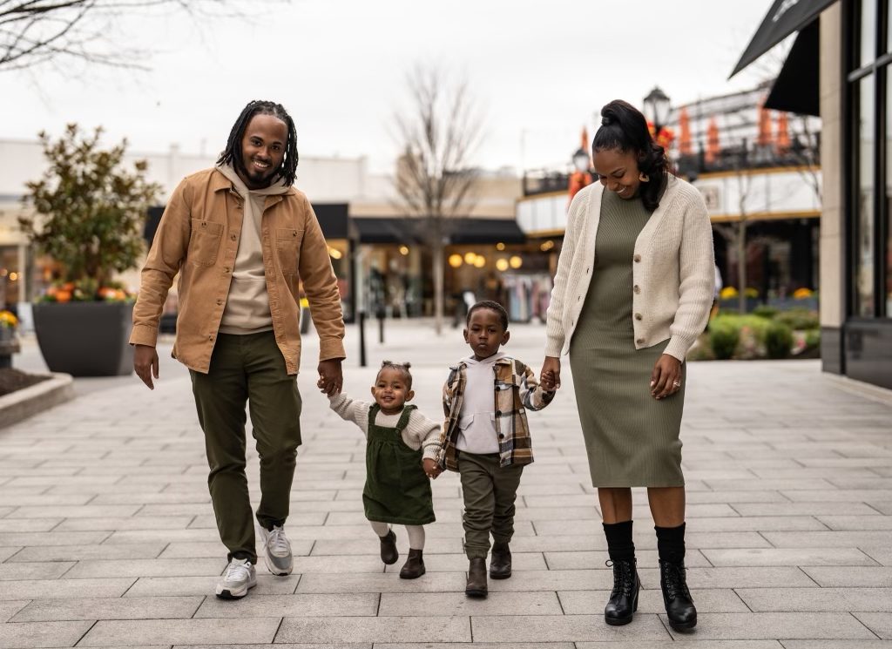
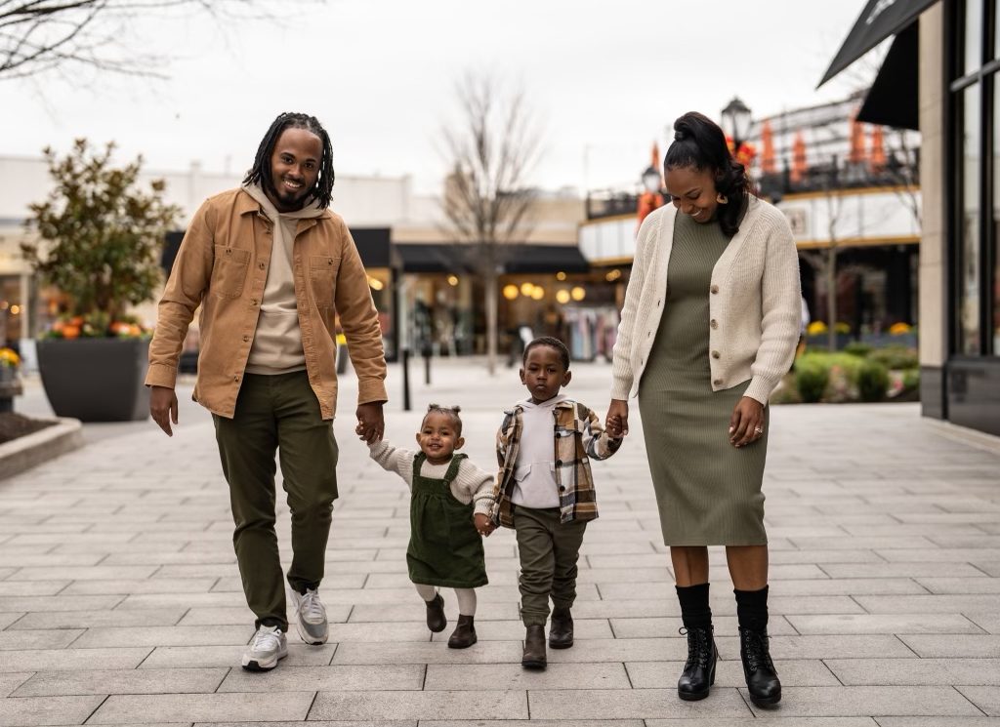

He is a devoted husband and father of two. He travels the world as a motivational speaker, author, and educational consultant using his compelling life story to help students and educators learn to shift the way they look at adversity.


Ismail started expecting to lose at a very young age. First, he lost his mother just two weeks before his sixth birthday. Then, the death of his father just one week after his eleventh birthday. By the time he was a teenager, Ismail made up in his mind that his life was purposeless. Lacking a sense of direction Ismail wandered into his twenties focused on drinking, partying, and trying to escape the void he felt from what he had lost as a child.
It wasn’t until his time working for Apple when his eyes began to open to the power he harnessed through his pain. Ismail recognized his uncanny ability to ignite a spark in others who were blind to the possibilities that their own live’s held.
Ismail is founder of iAM Legend, LLC, workshops and trainings for numerous schools and organizations like The City of Philadelphia’s Office of Children & Families, The Community College of Philadelphia, Microsoft and The Pennsylvania Institute of CPA’s to help shape the minds of the current and future leaders of tomorrow by identifying obstacles holding them back from being average and leaning into their gifts to build the life of success they desire. Today, Ismail is driven by his passion for helping other's like him, "those programmed to lose", to embrace their past and drive them to their dream future.

Ismail believes that there is a purpose in the pain and everyone's story is worth embracing. He encourages his audience to recognize that despite loss of loved ones, the environment they grew up in, trauma experienced or feelings of unworthiness, ‘We were not born to be average. We were born to be different, born to be you!’